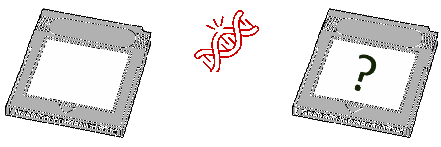

ROM MUTAGEN
A handy tool to create mutated versions of a file. See this video for an example of what could happen when applied to a Gold ROM file.
1. Upload a ROM to mutate
It can work with any type of file, but we recommend you try it on a ROM of your favorite game and then play it on an emulator.
You don't have a ROM? Oh no, it would be a shame if you clicked this link and didn't say anything to , right?
2. Choose Mutation Rate
The chance for each byte to be mutated. ROMs with a mutation rate greater than 0.001 will be likely to crash on boot.
3. Choose Mutation Area
-- Start mutations at % of the file
-- End mutations at % of the file
Only bytes in the selected portion of the file will be mutated. For games, mutating bytes in the first 12% of the file will make mutants very likely to crash on boot.
4. Choose Random Seed
This seed will initialise the random number generator. We recommend using your favorite incantation or the name of a dead pet. Leaving it blank will use the current date and time.
5. Choose Number of Mutants
The number of different mutants to generate with your chosen parameters. Mutants have a high chance to crash on boot, so generate several ones to make sure you will have at least one with an interesting behavior.
6. Mutate!
Your mutants should be downloaded shortly after pressing this button. If you chose to generate more than one, they will be put in a zip archive.